基本用法
1. 找到想要看的書
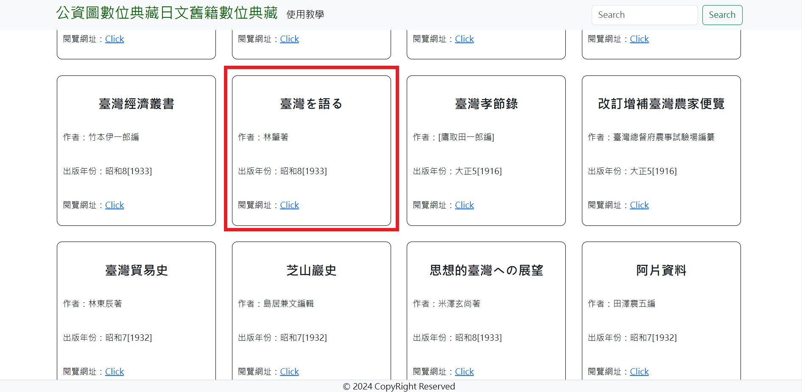2. 按 Click
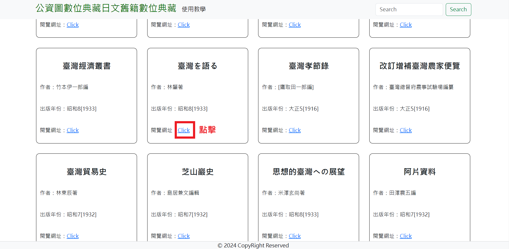3. 跳轉到公資圖的網站後，點選第一張圖片
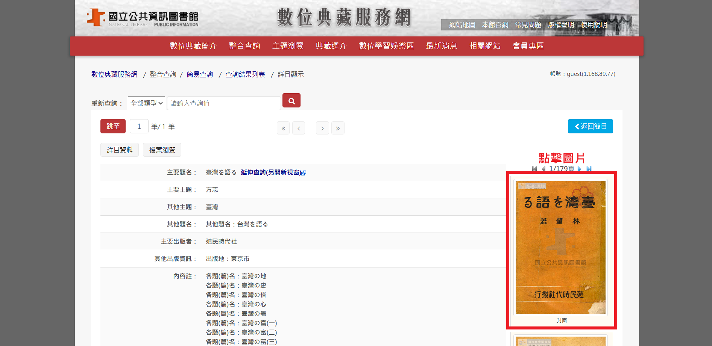4. 開始看書吧！
搜尋功能
1. 點選搜尋欄，輸入關鍵字，按下搜尋按鈕或enter
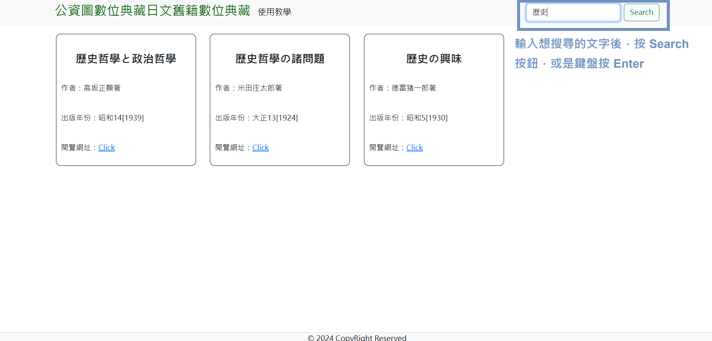2. 快速找到想看的書，再來的步驟如同「基本用法」
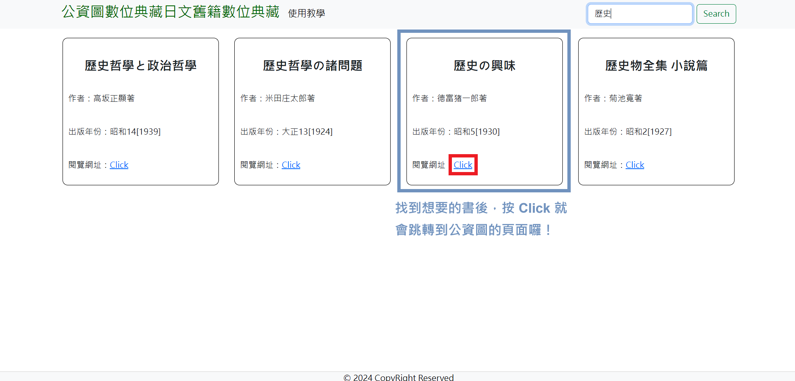取消搜尋
1. 把搜尋欄的關鍵字清空
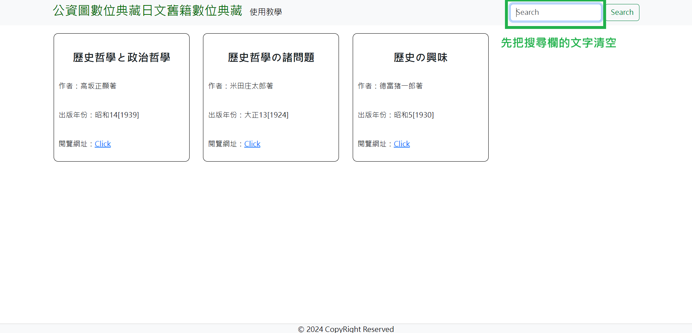2. 任意點擊方框外的地方一下，就會回到原本的畫面囉
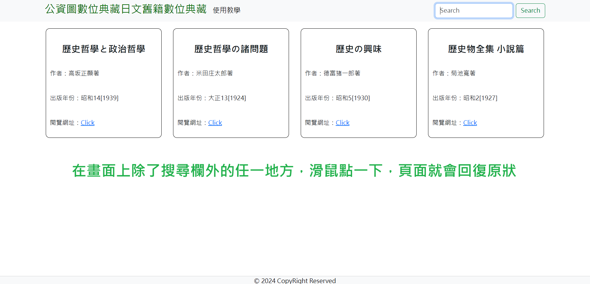- 網站資料來源：政府開放資料平台
- 網站會依身心狀況不定期維護
1. 找到想要看的書
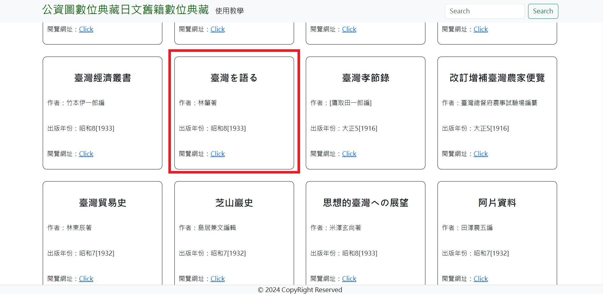2. 按 Click
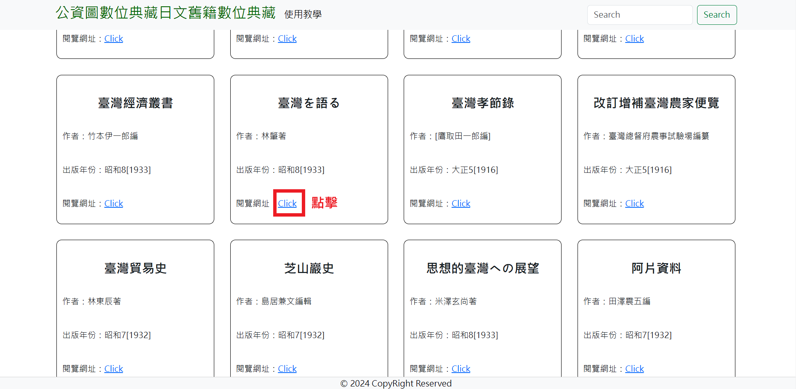3. 跳轉到公資圖的網站後，點選第一張圖片
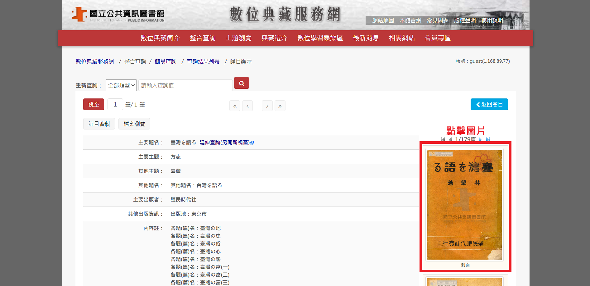4. 開始看書吧！
1. 點選搜尋欄，輸入關鍵字，按下搜尋按鈕或enter
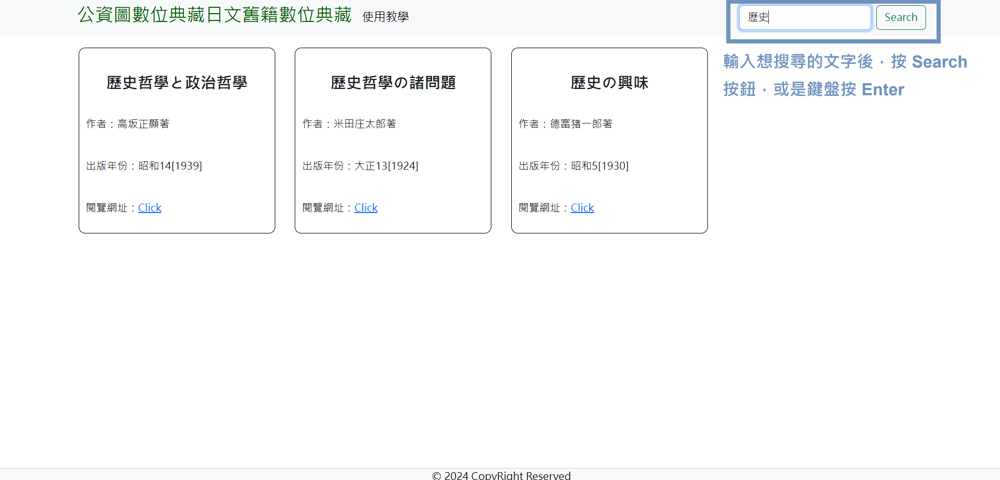2. 快速找到想看的書，再來的步驟如同「基本用法」
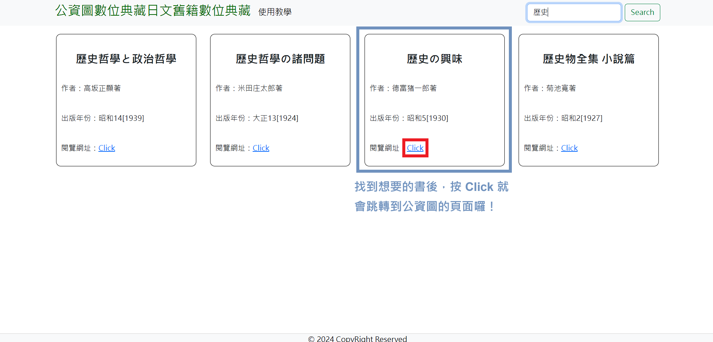1. 把搜尋欄的關鍵字清空
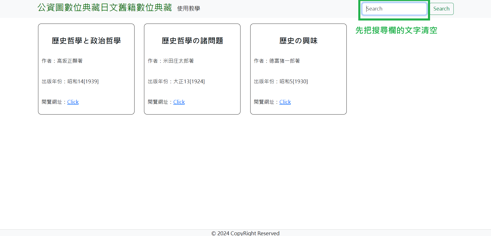2. 任意點擊方框外的地方一下，就會回到原本的畫面囉
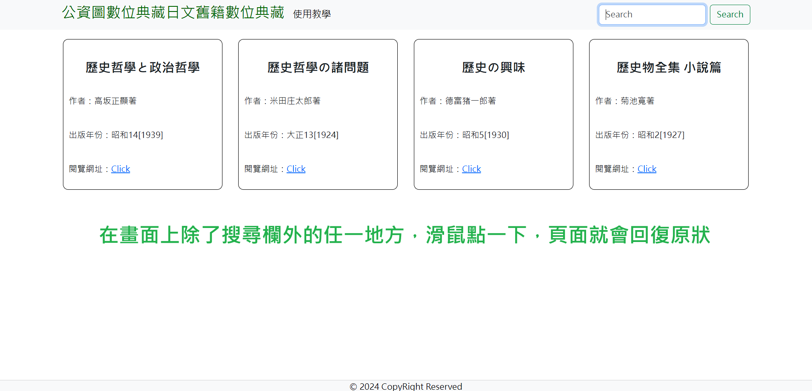